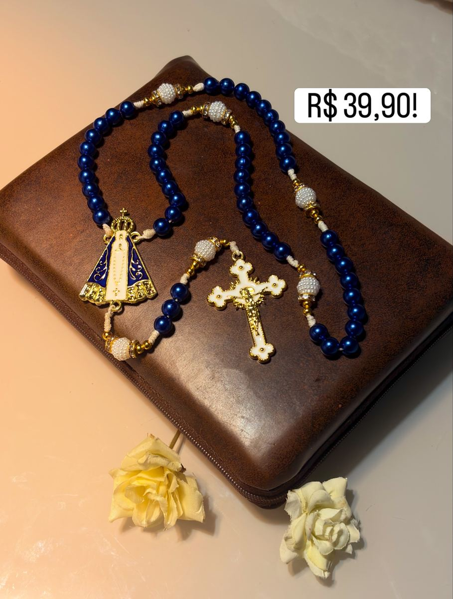
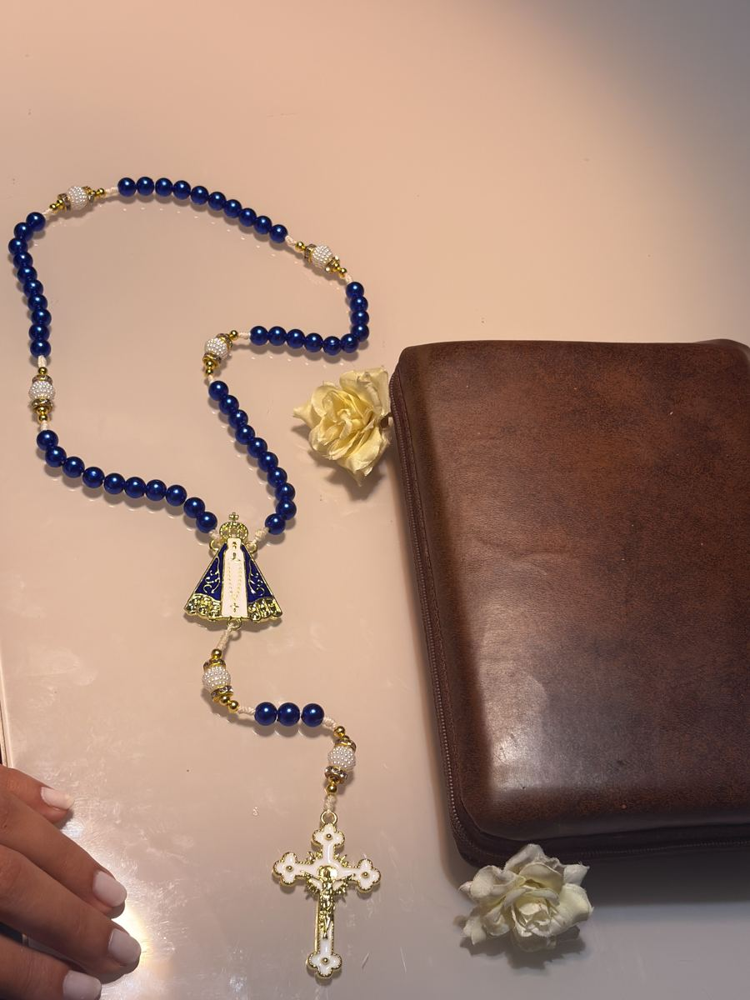
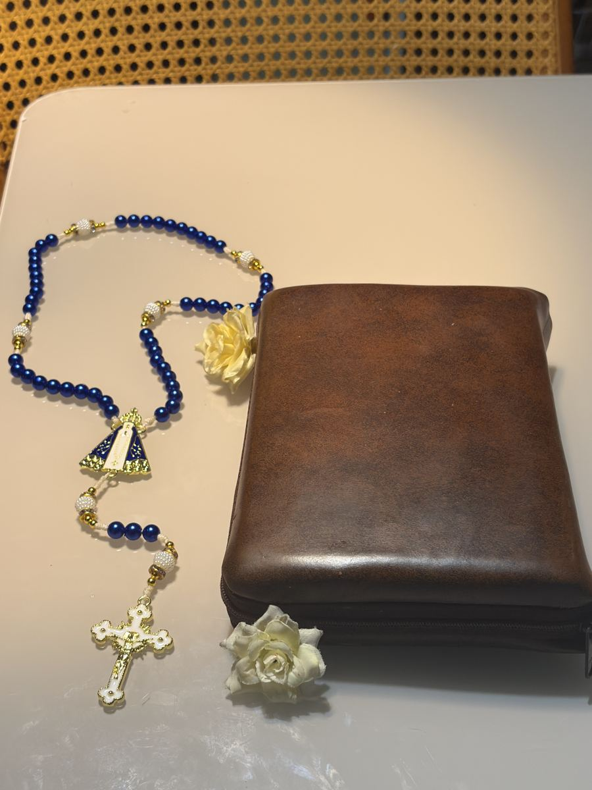
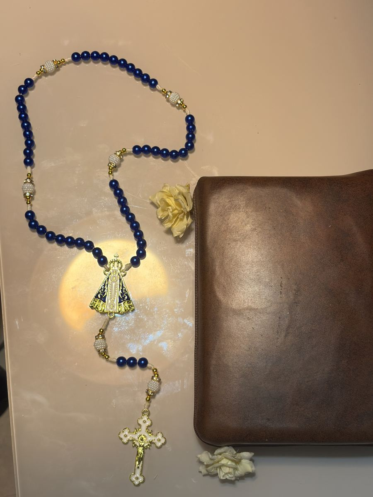
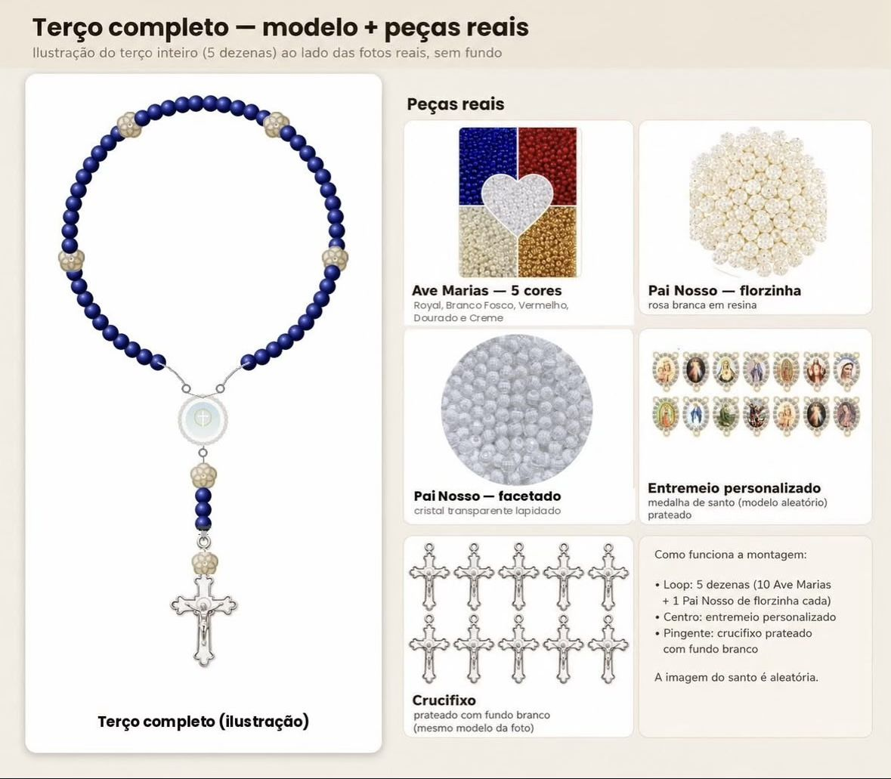

Cada terço da Pérolas de Maria é montado à mão, conta por conta, com carinho e devoção — para acompanhar suas orações e ser lembrança de quem você ama.
Sem complicação: você escolhe, paga por Pix e confirma pelo WhatsApp — do mesmo jeito acolhedor de sempre, agora direto pelo site.
Adicione ao carrinho o modelo e a quantidade que desejar.
Copie a chave Pix exibida no checkout e efetue o pagamento do valor total.
Envie o comprovante pelo botão do WhatsApp e combine a entrega com a gente.
Contas de pérola, entremeio esmaltado e crucifixo dourado — cada detalhe escolhido para durar e abençoar.




Monte o seu terço completo (5 dezenas) do seu jeito, direto por aqui — escolha o tipo, a cor, o estilo do Pai Nosso e o santo(a) do entremeio.
Define o valor do seu terço
Contas disponíveis em 5 cores

Prefere combinar direto com a gente? Fale pelo WhatsApp.
Falar no WhatsAppA Pérolas de Maria nasceu da vontade de colocar fé nas mãos de cada pessoa: terços montados um a um, com atenção a cada conta, cada nó, cada detalhe.
Se quiser um modelo personalizado ou tiver alguma dúvida antes de comprar, fale com a gente pelo WhatsApp — respondemos com carinho.